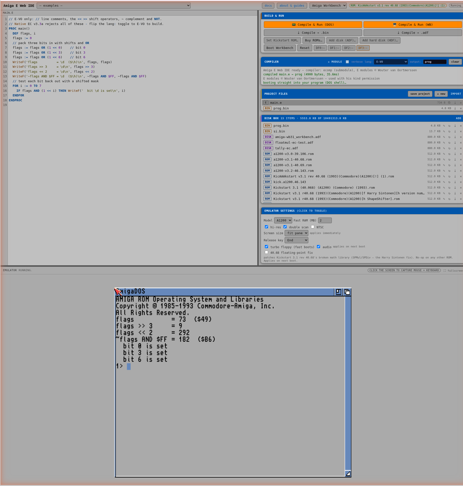
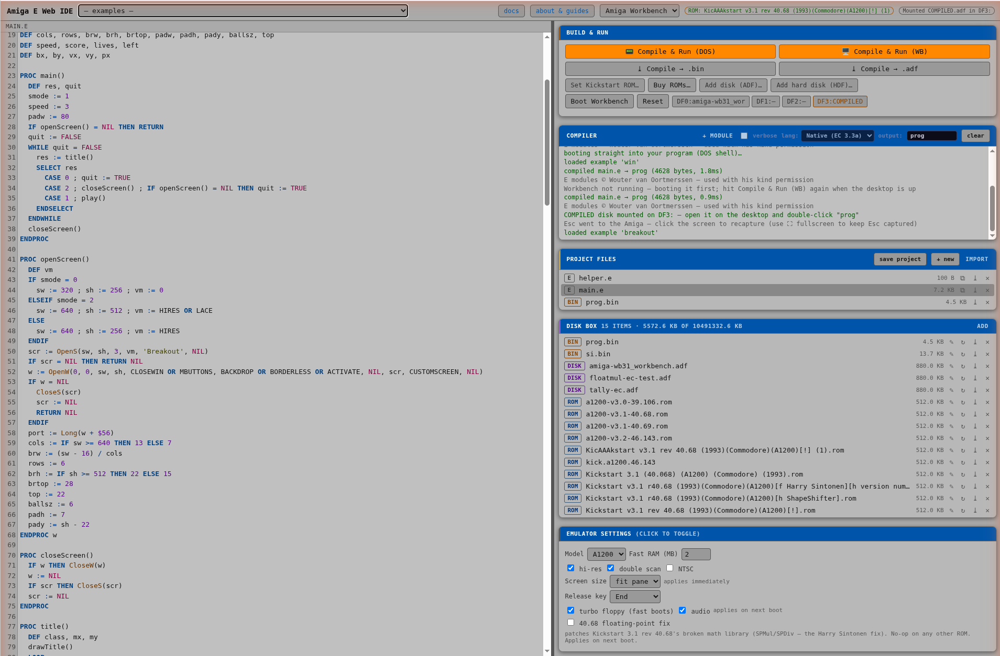

Write Amiga E in your browser, compile it in your browser in milliseconds, and run the result on an emulated Amiga 1200 — Workbench, floppies, hard disks and all. Nothing is uploaded anywhere; the compiler, the emulator and your files all live entirely in the page.
Getting started
- Set Kickstart ROM… — pick your Kickstart 3.1 (A1200) ROM file. It's stored in your browser's disk box, never uploaded. No ROM? Buy one legally from Amiga Forever (Cloanto).
- Add disk (ADF)… — add a Workbench 3.1 boot floppy the same way.
- Pick something from the examples dropdown (the multi-file one loads two tabs).
- Hit ▶ Compile & Run (DOS) — compiles in a few ms, boots the Amiga straight into your program, output in the AmigaDOS shell.

The four build actions
| Button | What happens |
|---|---|
| ▶ Compile & Run (DOS) | Builds a bootable floppy in memory and reboots straight into your program. Fastest way to see console output. |
| ▶ Compile & Run (WB) | Asks how to deliver: floppy DF3 (instant hot-mount into the running Workbench) or HDD image (a real RDB hard disk, attached on reboot). Either way a COMPILED drive appears on the desktop with your program inside — with an icon, double-click to run. |
| ⤓ Compile → .bin | Downloads the AmigaOS executable — take it to real hardware or any emulator. |
| ⤓ Compile → .adf | Downloads a bootable 880K floppy image that runs your program at boot. |
The output name field (Compiler panel) names the produced binary, like
the CLI's -o.

WriteF output isn't visible
there (just like the real machine). Use Run (DOS) for console programs, or
open Workbench's Shell and type DF3:yourprog / COMPILED:yourprog.
Programs that open their own windows and screens work perfectly from the desktop.
Multi-file projects
Exactly like real E: you always compile main.e, and it pulls
modules in via MODULE statements. Add files with + new in
the Project files panel:
MODULE '*helper' -> the * means: another file in this project
PROC main()
greet('Amiga')
ENDPROC-> helper.e
OPT MODULE
EXPORT PROC greet(who)
WriteF('hello, \s!\n', who)
ENDPROCModule resolution order: your project file tabs → the bundled v40 OS modules
('dos/dos', 'intuition/intuition', …). The
exec/dos/intuition/graphics calls are preloaded implicitly — OpenW,
WriteF, MODE_NEWFILE just work.
E-VO mode — modern Amiga E
Alongside the classic 1997 dialect, the IDE can compile E-VO — the modern, still-maintained evolution of Amiga E by Darren Coles. Flip the lang: dropdown in the Compiler panel from Native (EC 3.3a) to E-VO and ecomp accepts the E-VO language extensions. The choice is saved with your project.

// comments, <</>> shifts) compiling cleanly.ecomp implements E-VO as a strict, opt-in superset: every classic-E program still compiles byte-for-byte identically in either mode — E-VO only adds constructs on top. What the toggle unlocks:
//line comments- multi-dimensional arrays —
DEF grid[3][3]:ARRAY OF INT TRY/CATCH/ENDTRYblock exceptions- negated control flow —
IFN,WHILEN,ELSEIFN,UNTILN,EXITN… UNION/ENDUNIONfields in objectsBYTE/WORDas array-element and pointer types —ARRAY OF BYTE,PTR TO WORD- the
<</>>shift operators,~bitwise complement andNOT \xNNhex and\!escapes in strings- the E-VO standard library — extended string and list procs
(
StrClone,StrCompare,StrAdd,ListAdd,ListCopy, …), injected automatically when your program references them
Every one of these is validated against the real E-VO compiler: a three-way differential (ecomp vs the original EC v3.3a vs E-VO) runs E-VO's own unit-test suite and checks each shipped E-VO example byte-for-byte identical to E-VO's output under emulation. Full feature list and internals: docs/evo-support.md.
Try the four (evo) entries in the examples gallery — bit shifts &
// comments, a 2-D multiplication table, TRY/CATCH,
and the extended string library. They only compile with the lang toggle set
to E-VO.
E-VO is by Darren Coles — dev/e/evo on Aminet.
Bundled modules — include and go
The complete Amiga E v40 module set ships with the IDE — 382
precompiled .m modules. Name any of them in a MODULE
statement and ecomp links it into your program automatically; there is
nothing to install. The exec / dos / intuition / graphics core is preloaded
implicitly (so WriteF, OpenW, … always work);
everything else is one line away:
MODULE 'tools/EasyGUI', 'gadtools' -> a GUI toolkit + a system library, both bundledThe first six groups are E code/library modules you call directly
(and several drive the gallery examples). The rest are the
.library interface modules — constants, structs and LVO
tables for the OS. All 382, grouped:
tools/ — utility code modules (stack, ctype, EasyGUI, Vector, …) (34)
tools/Boopsi tools/EasyGUI tools/EasyGUI_debug tools/EasyGUI_lite tools/EasyGUI_notag tools/Vector tools/arexx tools/async tools/clonescreen tools/constructors tools/cookrawkey tools/copylist tools/ctype tools/exceptions tools/file tools/filledvdefs tools/filledvector tools/ghost tools/ilbm tools/ilbmdefs tools/inithook tools/installhook tools/iterators tools/lisp tools/longreal tools/longrealtiny tools/macros tools/muicustomclass tools/pt tools/scrbuffer tools/simplelex tools/stack tools/textlen tools/trapguru
amigalib/ — E ports of the classic amiga.lib helpers (10)
amigalib/Tasks amigalib/argarray amigalib/boopsi amigalib/cx amigalib/interrupts amigalib/io amigalib/lists amigalib/ports amigalib/random amigalib/time
other/ — assorted community code modules (35)
other/battclock other/battmem other/bitfield other/bits other/cia other/clearlist other/cloneworkbench other/disk other/dislib other/dispose other/disposeelinkedlist other/disposelink other/dll other/ecode other/fastinsert other/initlist other/isdigit other/isidentifier other/lowerchar other/misc other/mod other/potgo other/qualifieditemaddress other/readstr other/sendexplorer other/sendrexx other/setprogname other/skipnonwhite other/skiptochar other/skiptoedelim other/skipwhite other/split other/stack other/strcopy other/upperchar
oomodules/ — object-oriented class modules (NEW/methods) (35)
oomodules/commodity oomodules/coordinate oomodules/coordinate/line oomodules/coordinate/polyline oomodules/library oomodules/library/asl oomodules/library/commodities oomodules/library/device oomodules/library/device/keyboard oomodules/library/device/printer oomodules/library/device/trackdisk oomodules/library/exec/port oomodules/library/exec/port/arexxport oomodules/library/exec/port/portlist oomodules/library/gadtools oomodules/library/locale oomodules/library/locale/cataloglist oomodules/library/reqtools oomodules/list/associativearray oomodules/list/associativearray/associativestringarray oomodules/list/doublylinked oomodules/list/elist oomodules/list/execlist oomodules/list/queuestack oomodules/list/stringlist/stringlist oomodules/object oomodules/sort oomodules/sort/address oomodules/sort/numbers oomodules/sort/numbers/float oomodules/sort/numbers/fraction oomodules/sort/numbers/integer oomodules/sort/numbers/twonumbers oomodules/sort/string oomodules/sort/string/rawstring
class/ — small OO container classes (4)
class/hash class/sc class/sctext class/stack
afc/ — the Amiga Foundation Classes set (20)
afc/BeBox afc/Bitmapper afc/DirList afc/Displayer afc/IFFParser afc/Localer afc/Mousepointer afc/NodeMaster afc/Parser afc/ReqTooller afc/StringNode afc/ToolType afc/Worldbuilder afc/explain_exception afc/hardsprite afc/mgui afc/rexxer afc/super_picture afc/tasker afc/validPortName
system libraries — the core .library interfaces (50)
amigaguide asl bgui bullet colorwheel commodities console cybergraphics datatypes diskfont dos dtclass exec expansion gadtools graphics gtx icon iff iffparse input intuition keymap layers locale lowlevel mathffp mathieeedoubbas mathieeedoubtrans mathieeesingbas mathieeesingtrans mathtrans midi nofrag nonvolatile pointer powerpacker ramdrive realtime req reqtools rexxsyslib timer translator triton utility vector vmem wb wizard
exec/ (16)
exec/alerts exec/devices exec/errors exec/execbase exec/interrupts exec/io exec/libraries exec/lists exec/memory exec/nodes exec/ports exec/resident exec/semaphores exec/strings exec/tasks exec/types
dos/ (14)
dos/datetime dos/dos dos/dos_lib dos/dosasl dos/dosextens dos/doshunks dos/dostags dos/exall dos/filehandler dos/notify dos/rdargs dos/record dos/stdio dos/var
intuition/ (13)
intuition/cghooks intuition/classes intuition/classusr intuition/gadgetclass intuition/icclass intuition/imageclass intuition/intuition intuition/intuitionbase intuition/iobsolete intuition/pointerclass intuition/preferences intuition/screens intuition/sghooks
graphics/ (23)
graphics/clip graphics/coerce graphics/collide graphics/copper graphics/display graphics/displayinfo graphics/gels graphics/gfx graphics/gfxbase graphics/gfxmacros graphics/gfxnodes graphics/graphint graphics/layers graphics/modeid graphics/monitor graphics/rastport graphics/regions graphics/rpattr graphics/scale graphics/sprite graphics/text graphics/videocontrol graphics/view
devices/ (21)
devices/audio devices/bootblock devices/cd devices/clipboard devices/console devices/conunit devices/gameport devices/hardblocks devices/input devices/inputevent devices/keyboard devices/keymap devices/narrator devices/parallel devices/printer devices/prtbase devices/prtgfx devices/scsidisk devices/serial devices/timer devices/trackdisk
libraries/ (32)
libraries/amigaguide libraries/asl libraries/bgui libraries/bgui_macros libraries/commodities libraries/configregs libraries/configvars libraries/cybergraphics libraries/diskfont libraries/expansion libraries/expansionbase libraries/gadtools libraries/iff libraries/iffparse libraries/locale libraries/lowlevel libraries/mathieeesp libraries/mathlibrary libraries/mathresource libraries/midi libraries/muibuilder libraries/nofrag libraries/nonvolatile libraries/ppbase libraries/realtime libraries/reqbase libraries/reqtools libraries/translator libraries/triton libraries/triton_macros libraries/vmem libraries/wizard
gadgets/ (6)
gadgets/button gadgets/calendar gadgets/colorwheel gadgets/gradientslider gadgets/tabs gadgets/tapedeck
datatypes/ (6)
datatypes/animationclass datatypes/datatypes datatypes/datatypesclass datatypes/pictureclass datatypes/soundclass datatypes/textclass
resources/ (11)
resources/battclock resources/battmem resources/battmembitsamiga resources/battmembitsshared resources/card resources/cia resources/disk resources/filesysres resources/mathresource resources/misc resources/potgo
prefs/ (15)
prefs/font prefs/icontrol prefs/input prefs/locale prefs/overscan prefs/palette prefs/pointer prefs/prefhdr prefs/printergfx prefs/printerps prefs/printertxt prefs/screenmode prefs/serial prefs/sound prefs/wbpattern
plugins/ (14)
plugins/animcontrol plugins/button plugins/calendar plugins/colorwheel plugins/gradient plugins/iconify plugins/imagebutton plugins/led plugins/password plugins/tabs plugins/tapedeck plugins/text_plug plugins/ticker plugins/toolify
utility/ (6)
utility/date utility/hooks utility/name utility/pack utility/tagitem utility/utility
hardware/ (6)
hardware/adkbits hardware/blit hardware/cia hardware/custom hardware/dmabits hardware/intbits
rexx/ (4)
rexx/errors rexx/rexxio rexx/rxslib rexx/storage
diskfont/ (4)
diskfont/diskfont diskfont/diskfonttag diskfont/glyph diskfont/oterrors
workbench/ (2)
workbench/startup workbench/workbench
images/ (1)
images/led
Adding your own modules
Got a precompiled .m from elsewhere — a third-party library, or
one you built yourself with real EC or E-VO? Click + module in the
Project files panel and choose the .m file. It is parsed on the
spot and becomes resolvable by MODULE 'name' (where
name is the filename without .m), linked exactly
like a shipped module. A user module overrides any bundled module of
the same name, so you can shadow a shipped one with your own build. It lives
in the page only — nothing is uploaded — and a bar above the editor lets you
remove it again.
The disk box
Your persistent, private, in-browser storage (IndexedDB — survives reloads, multi-GB quota, nothing leaves your machine):
- ROM Kickstart images — ↻ selects the active one (shown in the header)
- DISK ADF floppies — mount via the DF0:–DF2: drive chips (DF0 = boot disk); DF3 is reserved for compiled output
- HDF hard disk images — attached as DH0 on next boot
- BIN every compiled binary, automatically
- PROJECT saved projects (see below)
Every item can be renamed and given a description (✎), downloaded (⤓) or deleted (✕). Drop any mix of files on add — they're sorted by extension.
Projects
save project stores everything — all source files, emulator settings
and the output name — as one item in the disk box. ↻ on a project restores
the lot. Download it as a .project file to move between machines
or share; drop it back on the disk box to import.
The emulator

| Setting | Notes |
|---|---|
| Model | A500 – A4000 (default A1200) |
| Fast RAM | 0–8 MB on top of the model's chip RAM |
| hi-res / double scan | the Amiga's native output resolution |
| Screen size | 1× / 1.5× / 2× / fit pane — display scaling, applies live |
| turbo floppy | much faster boots; uncheck for authentic drive timing |
| NTSC / audio | as labelled |
| 40.68 floating-point fix | off by default — patches Kickstart 3.1 rev 40.68's broken math library so floating point works (see below) |
Keyboard & mouse
Click the Amiga screen to capture input. The mouse is locked into the emulator (it cannot wander out of the pane) and the keyboard goes to the Amiga. Press the release key (default End, configurable: End / Home / PageUp / PageDown — none exist on an Amiga keyboard) to hand control back to the IDE.
Need Esc inside the Amiga? Use ⛶ fullscreen: the Keyboard Lock API captures Esc completely for the emulator — Amiga apps get it, nothing exits. In windowed mode the browser reserves Esc to break pointer capture (a security rule no site can override) — when that happens the IDE still forwards the Esc to the Amiga so the program receives it, then waits for a click to recapture. While not captured, typing stays safely in the editor. Drag the pane borders to resize.
The Kickstart 40.68 floating-point fix
One specific ROM has a real flaw worth knowing about.
Kickstart 3.1 rev 40.68 — the stock A1200 ROM, and the version
most people own — ships a mathieeesingbas.library whose
software multiply and divide vectors are mis-aimed: their
jump-table offsets in ROM (at $FC1B92) point into a data
table instead of into code. So any floating-point multiply or divide
Gurus with Software Failure #8000000B — a crash that
looks like a missing FPU but has nothing to do with one. (The
program, the compiler and the emulator are all fine; the ROM's software
math routine is simply pointed at the wrong address.)
On a real Amiga you never hit this, because the Workbench startup-sequence runs SetPatch, which repairs the broken vectors at boot. The IDE boots straight into your program with no startup-sequence, so the raw ROM bug is exposed. Commodore themselves fixed it one revision later (40.69), and Harry Sintonen's well-known patched 40.68 applies the identical four-byte change.
Tick 40.68 floating-point fix in Emulator settings and the
IDE applies that same four-byte fix
(00 1A 00 1C →
06 36 06 A0) to the ROM in memory just
before boot, re-computes the ROM checksum so the image still
self-validates, and floating point works. It is gated on the exact broken
byte signature, so it is a strict no-op on every other ROM (40.69,
3.2, A4000, …), and your stored ROM file is never modified. It is
off by default to keep emulation byte-accurate — and the emulator
core itself is never touched; the fix lives entirely in the IDE.
Under the hood
- Compiler: ecomp — zero-dependency JavaScript, E v3.3a semantics validated byte-for-byte against the original compiler (115 differential tests, plus CI that runs the produced binaries under m68k emulation). Included here as a git submodule.
- Linker: ecomp links your program against the original
EC-built binary
.mmodules — EasyGUI and thetools//std/set — by reading the reverse-engineered EMOD format directly: it rebases absolute and ifunc relocations, binds A4-relative globals and cross-module class inheritance (soNEWof an inherited class resolves across modules), and emits a standard Amiga HUNK executable. The linked output matches EC's byte-for-byte behaviour under emulation, and the emitted code is 68000-safe (an earlier version leaked 68020-only opcodes into the glue — now it runs on a plain 68000). A binary-module link suite (EasyGUI plus a third-party module resolved through the module path) guards it in CI. - Delivery: compiled programs are wrapped into disk images in memory — a bootable OFS floppy (DOS mode), an FFS data floppy hot-mounted on DF3, or an RDB-partitioned FFS hard disk image (WB modes). No serial cables, no transfers, no prompts.
- Emulator: Scripted Amiga Emulator (SAE).
- Editor: CodeMirror with a custom Amiga E mode (nested
/* */,->comments,$hex/%bin, E's case-significant identifiers).
Files, rights & thanks
- Kickstart ROMs and Workbench disks are not included — use your own or buy them from Amiga Forever. Everything you load stays in your browser.
- The E v40 modules are © Wouter van Oortmerssen (Aminet dev/e/amigae33a), included with his kind permission.
- IDE and compiler are GPL-3.0: Amiga-E-Web-IDE · Amiga-E-Compiler-WebBased.